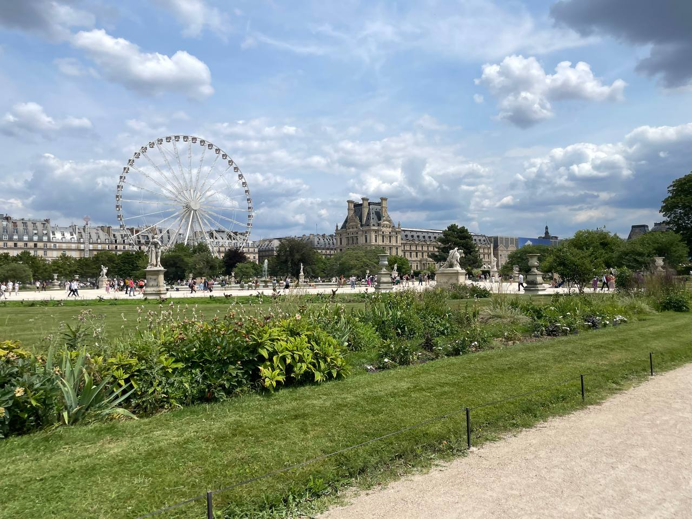
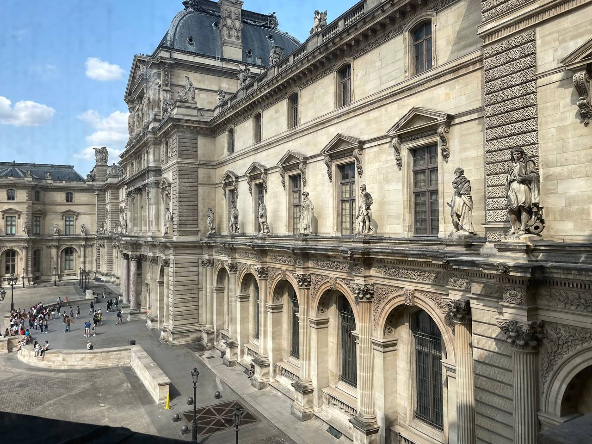
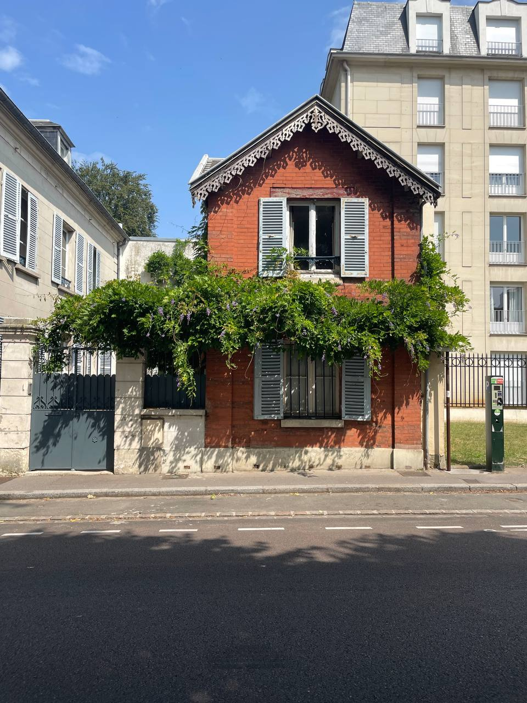

I am going to put pretty pictures from my trip to France throught this to make it look better...
My name is Giovanni Cascio. I am an aspiring computer scientist. My dream is to create a stable and realistic ecosystem within a computer. I love the future and I have many hobbies. My favorite things to do are Chess, Video Games, Board Games, and Robotics.
I grew up in a rural town outside of Boise, Idaho. There wasn't much for me to do so I became fascinated with computers. I quickly learned that computers even the playing field when I am competing with my peers.
As I had much free time, I was able to observe nature and I would speculate how it works. Then one day I had a brilliant idea to create the ultimate combination: Nature inside of a computer. I couldn't see why no one has done this. It's easy, I said to myself. Spoiler Alert: It's not...
My plan is to attend Boise State University for a Masters Degree in Computer Science. I also have had an endeavor to visit China. For the last four years I have been studying Mandarin Chinese. If it's possible, I will Minor in Chinese Studies.
I have been doing a bunch of robotics. My robotics team is currently upgrading our drive system and we are working towards vision autonomy. If you would like to learn more go to my Projects Page. Other than that I have been working towards graduating high school.
